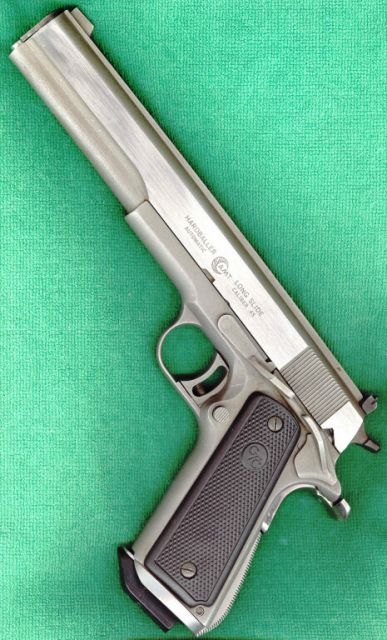

A Day at the Range
L. Neil Smith's Blog
Sepbember 15, 2003, Some Weapons PicturesPage 1

Here's the AMT longslide .45 that Buckley F. Williams killed his little brother Bennett with in The American Zone. I got it from the gunwriter J.B. Wood, to whom it was given by Harry Sanford, founder of AMT. I've made some minor changes. The gun now has a drop-in beavertail grip safety, a Smith & Alexander magazine well, and a LaserGrip designation system. It also uses Chip McCormick "Shooting Star" 8-shot magazines equipped with Wilson slam pads so they'll work right with the mag well. Inside, there's a spring-powered mechanical shock buffer built into the recoil spring guide.